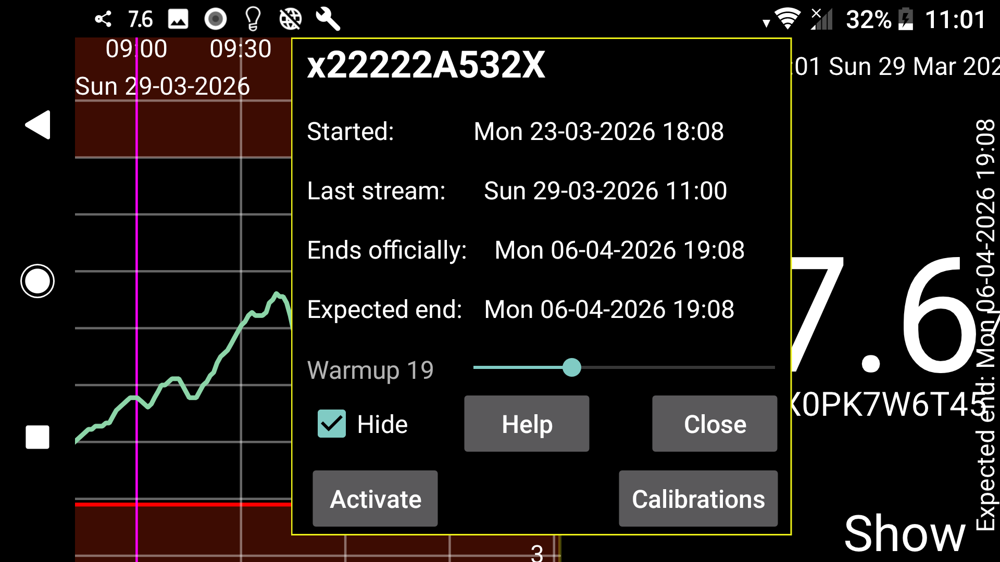

ar az de es fa hi it ja ko nl ru uk uz en
Sensorun başlanğıc vaxtını, son Axın göstəricisinin və son skanın vaxtını, gözlənilən və istehsalçı tərəfindən müəyyənləşdirilmiş bitmə vaxtlarını göstərir.
İsinmə: Sibionics və Linx/Lumiflex/AiDEX X sensorları üçün isinmə dövrünün neçə dəqiqə davam etdiyini dəyişə bilərsiniz. İsinmə dövrünün məlumatları bütün funksiyalarda nəzərə alınmır: ekrandakı qrafikdə, statistikada, ixrac edilən məlumatlarda və veb-serverdə. Bu, əvvəlki dövrün məlumatlarına da geriyə dönük tətbiq olunur.
Gizlət: İşarələndikdə bu sensorun əyrisini gizlədir. İşarəni götürməklə və ya ekranın aşağı sağındakı Göstər düyməsinə basmaqla əyrini yenidən göstərə bilərsiniz.
Kalibrləmələr: Sol menyu → Tənzimləmələr → Kalibrləmə bölməsində qan qlükozası etiketi seçilibsə və ortanın solundakı menyu → Yeni miqdar vasitəsilə istisna edilməmiş qan qlükozası ölçmələri daxil edilibsə, yaradılmış kalibrləmələrin siyahısını Kalibrləmələr düyməsindən aça bilərsiniz. Həmçinin baxın: Juggluco-da kalibrləmə.
Aktivləşdir: İstifadəsi bitmiş sensorlar üçün Aktivləşdir düyməsi görünür. Bu düymə ilə qablaşdırmadakı Data Matrix kodunu yenidən skan etmədən sensordan istifadəni bərpa etmək olar. Bu, Libre 2 və Libre 3 sensorlarında da mümkündür. Ancaq sensor başqa telefondakı Juggluco ilə NFC vasitəsilə skan edilibsə, onu bu telefonda yenidən istifadə etmək üçün sensoru mütləq yenidən NFC ilə skan etmək lazımdır.